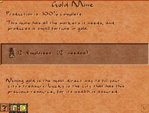

Gold Mine
The Gold Mine is an extraction building that harvests gold ore from rocky outcroppings visible on the map. It is the city's only source of gold, a resource that is converted directly into deben by the Palace rather than distributed through the storage system. Every deben of gold delivered to the Palace goes straight into the city's treasury.
Gold is not merely one commodity among many — it is effectively a second income stream alongside taxation, and is essential for financing large cities and military expenses. Several missions gate key buildings or events behind a cumulative gold income threshold, so establishing mines early is often a top priority.
The mine carries a strong negative desirability effect that extends well beyond its footprint. It is one of the most undesirable neighbours in the game, comparable to large industrial workshops.
Stats
- Cost (Normal)
- 150 Db
- Cost by difficulty
- VE 50 · Easy 100 · Normal 150 · Hard 250 · VH 400
- Output
- Gold → Palace (treasury)
- Requires
- Gold ore deposit on footprint tiles
- Labor category
- Industry / Commerce
- Fire risk
- None (fireproof)
- Damage risk
- Low
- Overlay
- Industry I
Overview
Gold mining was central to the Egyptian economy. The ancient Egyptians worked mines in Nubia, the Eastern Desert, and Sinai — often under gruelling conditions — to supply the royal treasury with the metal that financed monuments, armies, and trade. Unlike most resources, gold was not a trade good in the conventional sense; it flowed upward to the state rather than circulating through markets.
In the game this is modelled precisely: gold produced by Gold Mines bypasses the storage yard system entirely and is delivered directly to the Palace, which converts it into deben added to the treasury. The Industry overlay (I) shows the current production state of all mines and workshops; a Gold Mine working at full capacity will show as fully active.
Mechanics
Production
The Gold Mine accumulates progress each day based on its current workforce. At full staffing of 12 workers the daily progress increment is:
progress_per_day = workers / production_divider = 12 / 10 = 1.2 per day
When accumulated progress reaches 200 (progress_max), one batch of gold is produced and progress resets to zero. At full staffing this yields one batch roughly every 167 game days. The minimum daily increment is 1, so a mine with a single worker still produces — just very slowly.
An optional enhanced-edition feature (gameplay_change_goldmine_twice_production) halves the production divider to 5, effectively doubling throughput to one batch every ~83 days at full staffing.
Gold delivery
When a batch is ready, a Cartpusher figure spawns and carries the gold to the Palace. Unlike all other resources, gold cannot be stored in Storage Yards — the cartpusher's only valid destination is the Palace. If no Palace is reachable via roads, the cartpusher will wander and eventually return, leaving the gold undelivered. Ensure continuous road access between every Gold Mine and the Palace.
Mine collapse
Gold Mines — like all extraction buildings — can collapse randomly. With the optional feature gameplay_change_random_mine_or_pit_collapses_take_money enabled, a collapse also levies an emergency fund of 250 deben from the treasury as a disaster cost. The collapsed building leaves rubble that must be cleared before a new mine can be placed.
Ore deposits
Gold ore deposits appear on the map as light rocky outcroppings with a distinctive metallic sheen. The Gold Mine must be placed with all four footprint tiles on valid deposit terrain. For full mechanics — deposit types, Raw Materials overlay, and depletion — see Ore Deposit.

Ore depletion
Gold ore deposits are finite. Each day that the mine produces progress, the underlying ore tile is partially depleted. When a tile's ore value reaches zero the mine can no longer extract from it. On most maps a single deposit sustains a mine for many decades of game time, but on resource-sparse maps — or when running multiple mines on the same deposit — depletion can become a limiting factor.
The depletion per day is proportional to the progress gained: a faster-producing mine depletes ore faster. The Raw Materials overlay accessed from the building info panel shows the remaining ore level. Once the deposit is exhausted the mine becomes idle; demolishing and relocating it to a fresh deposit (if one exists) is the only remedy.
Placement
The Gold Mine must be placed directly on a gold ore deposit. Ore deposits appear as light rocky patches on the terrain; hovering the Gold Mine placement preview over them will show a valid footprint. The mine will not function if placed on ordinary terrain even with road access.
- The mine requires road access for its cartpusher to deliver gold to the Palace.
- The mine needs to be within labor walking range of a housing cluster — workers commute on foot. If the ore deposit is far from housing, either extend housing toward the mine or ensure a continuous road connecting the two areas.
- The strong desirability penalty (−16 at the footprint, affecting tiles up to 6 steps away at step‑size 3) means Gold Mines should be kept well away from residential zones. A buffer of roads, gardens, or open terrain reduces the impact.
- If a map has multiple ore deposits, prioritise those closest to the Palace road network to minimise cartpusher travel time.
Tips
- Build housing near mines. Gold ore deposits are often placed far from the starting area. Workers must walk to the mine every day; if the commute is too long the mine will be understaffed and production will crawl. A small housing cluster — even just 2–3 vacant lots with a road connection — close to the mines solves this.
- Keep a clear road to the Palace. Gold cartpushers have only one destination. A blocked or missing road segment between the mine and Palace stops gold delivery entirely. Use the road overlay to verify connectivity after placing new buildings.
- Watch the desirability overlay. The −16 penalty is large. Placing a Gold Mine upwind of a housing cluster will stall housing evolution. Use the Desirability overlay before placing to find an isolated spot.
- Multiple mines on one deposit deplete it faster. If a map has only one ore patch, spreading two mines across it doubles throughput but also doubles the depletion rate, shortening the effective lifespan of the deposit.
- Mission thresholds. Several missions (e.g. Thinis) require a cumulative gold income target to unlock new buildings. Build mines as early as possible in those missions so the threshold is reached before housing evolution stalls.
In the original game

In the original Pharaoh and its expansion Cleopatra: Queen of the Nile the Gold Mine behaves identically to the Akhenaten implementation. Gold is the only resource that flows directly to the Palace rather than passing through Storage Yards, and the mine must be placed on a visible rocky ore outcrop. The in-game help text (message ID 93, shared with the Copper Mine) describes gold as "a rare and precious commodity" and explicitly notes that gold never enters the storage yard system.
Developer reference
All paths relative to the repository root.
JS config — src/scripts/buildings.js
Static parameters for the Gold Mine are defined inside src/scripts/buildings.js in the building_mine_gold block:
building_mine_gold { animations { _pack { pack:PACK_GENERAL } preview { id:185 } base { id:185 } work { pos [54, 15], pack:PACK_SPR_AMBIENT, internal_offset:true, id:48, max_frames:16, duration:2 } } output { resource: RESOURCE_GOLD } building_size : 2 meta { help_id:93, text_id:162 } info_sound : "Wavs/gold.wav" labor_category : LABOR_CATEGORY_INDUSTRY_COMMERCE needs { rock:true, ore:true } flags { is_extractor:true, is_industry:true } cost [ 50, 100, 150, 250, 400 ] // VE · Easy · Normal · Hard · VH desirability { value[-16], step[2], step_size[3], range[6] } laborers [12] fire_risk [0] damage_risk [2] progress_max : 200 production_rate : 100 production_divider : 10 }
JS event handler — src/scripts/building_mine_gold.js
The only JS event handler for the Gold Mine fires before a collapse:
// src/scripts/building_mine_gold.js [es=(building_mine_gold, on_before_collapse)] function building_mine_gold_on_before_collapse(ev) { if (!game_features.gameplay_change_random_mine_or_pit_collapses_take_money) { return } emit event_finance_request { type: efinance_request_disasters, deben: 250 } }
When the gameplay_change_random_mine_or_pit_collapses_take_money feature flag is active, a collapsing Gold Mine charges 250 deben as a disaster cost before the structure is destroyed.
C++ — building_mine_gold.h / building_mine_gold.cpp
The class inherits from building_mine → building_industry → building_impl. The only custom static param is production_divider:
class building_mine_gold : public building_mine { public: BUILDING_METAINFO(BUILDING_GOLD_MINE, building_mine_gold, building_mine) struct static_params : public building_static_params { uint16_t production_divider; // default: 10 } BUILDING_STATIC_DATA_T; virtual int produce_uptick_per_day() const override; virtual void update_production() override; virtual void production_finished() override; };
Key method details:
produce_uptick_per_day()— returnsmax(1, workers / divider). With thegameplay_change_goldmine_twice_productionfeature the divider is halved first.update_production()— scans the 2×2 footprint tiles withmap_get_golden(), finds the tile with the most remaining ore, callsbuilding_industry::update_production()to advance progress, then depletes that tile by the progress delta viamap_golden_deplete().production_finished()— whenprogress >= progress_max(200), callsstore_resource(RESOURCE_GOLD, ready_production())and resets progress. The stored gold is later picked up by a Cartpusher spawned by the base class.
Enum value: BUILDING_GOLD_MINE = 161 (src/building/building_type.h line 140).
Game message — src/scripts/game_messages_en.js
| Field | Value |
|---|---|
| Key | message_building_gold_copper_mine |
| ID | 93 |
| Size | 30 × 28 |
| Title | Gold and Copper Mines |
This message is shared between the Gold Mine and the Copper Mine. It explains that both mines must be placed on rocky outcroppings with metallic patches, require road access and labor, and are among the most undesirable neighbours in the city. The gold section specifically notes that gold goes directly to the Palace rather than to Storage Yards.
The message is shown when the player clicks the help icon on a Gold Mine's info window (help_id: 93 in src/scripts/buildings.js).